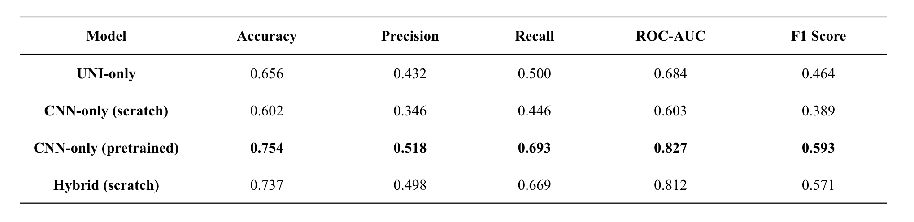
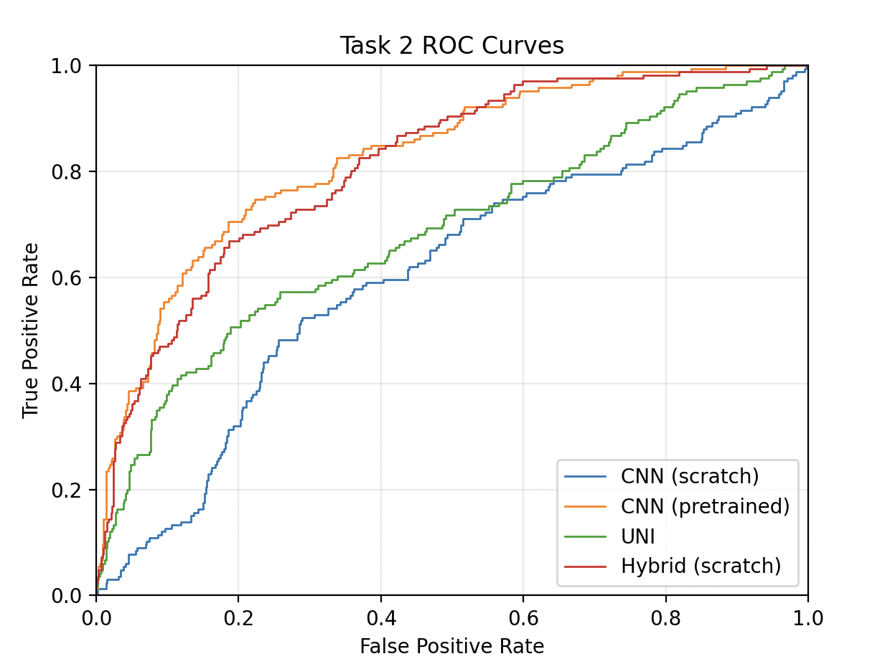
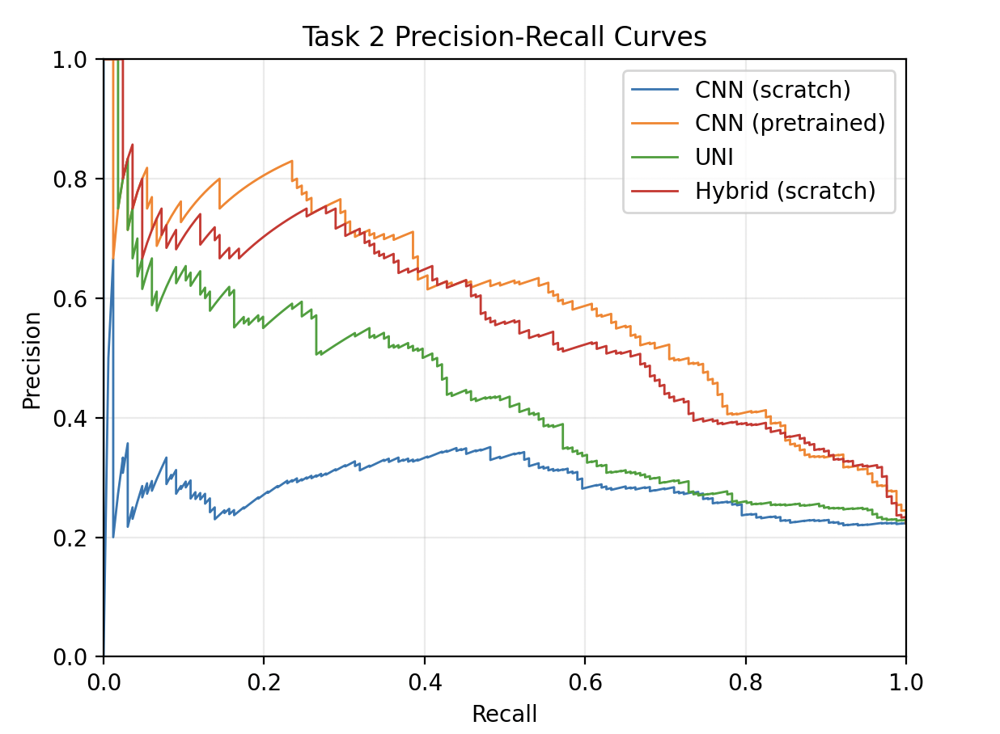

| A Hybrid Foundation Model Architecture with Task-Specific Local Feature Learning for Mitosis Detection | |||
| Elizabeth Zhang | Katherine Li | ||
| Final project for 6.7960, MIT | |||
Experiment 3: Generalization to Atypical Mitosis Classification
To test whether our findings generalize beyond mitosis detection, we evaluated our hybrid model on the AMi-Br (Atypical Mitosis in Breast cancer) dataset, which poses a fundamentally different challenge: distinguishing atypical mitotic figures from typical ones []. Unlike MIDOG, where the task is to distinguish mitotic figures from normal cells, AMi-Br requires recognizing structural abnormalities within confirmed mitoses (Figure 7).

Dataset
The AMi-Br dataset contains 3,720 patches: 2,888 typical mitoses (77.6%) and 832 atypical mitoses (22.4%). We used an 80/20 stratified train-validation split. To address class imbalance, we employed weighted cross-entropy loss with inverse frequency weights (typical: 0.64, atypical: 2.23).
Results
Unlike the first mitosis/non-mitosis task where the from-scratch hybrid achieves the best performance across all metrics, the model performs comparably to the standalone pretrained EfficientNet-B3 on this task, while the other baseline models perform noticeably worse across all metrics. UNI2-h alone struggles on AMi-Br. The foundation model's representations appear less suited to the fine-grained structural discrimination required for atypical mitosis classification. Aligning with expectations, the scratch CNN alone performs essentially at chance. All models show low precision on the minority class, reflecting the difficulty of the task and the class imbalance. Even the best model achieves only 51.8% precision on atypical mitoses.



The results of MIDOG and AMi-Br suggest that the from-scratch hybrid's advantage may be task-dependent, though we interpret the AMi-Br findings cautiously given the small performance margins (~1.7% accuracy) and likely not significant without additional runs. However, the lack of clear hybrid advantage is itself informative: the advantages from-scratch hybrid that performed best on MIDOG may not transfer directly to this task.
One possible interpretation involves the nature of discriminative features. To distinguish mitotic from non-mitotic imposters, the model may rely primarily on local texture, since imposters lack the characteristic condensed chromatin appearance. Atypical mitoses differ from typical ones in global structure, since the model must detect subtle patterns in asymmetric chromosome distribution, abnormal spindle geometry, spatial relationships between segregating chromatids. Thus, we hypothesize that the MIDOG classification task relies more heavily on pixel-level information, while atypical mitotic classification requires more complex pattern recognition. Therefore, from-scratch CNNs may excel when tasks require learning domain-specific local features, while pretrained CNNs' richer semantic representations may be effective for structural reasoning tasks. However, this remains speculative without further experiments controlling for other variables.
Figure 7. Illustration of normal and atypical mitotic figures and their subtypes.
Table 4. Model performances on atypical v. normal mitotic figure task.
Figure 8. a) AUROC and b) precision-recall curves for model performances on atypical v. normal mitotic figure task.